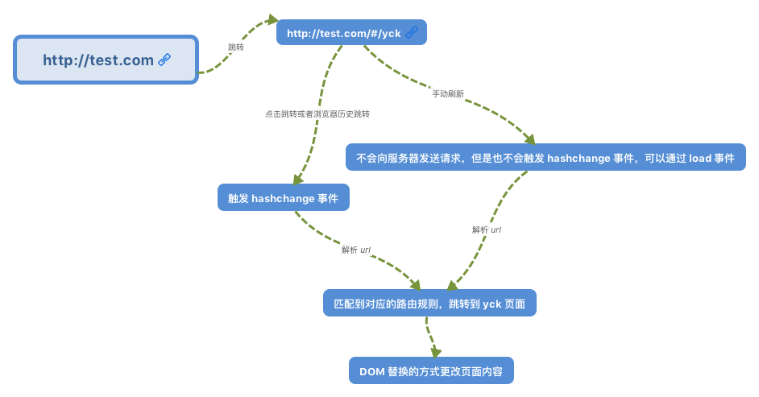
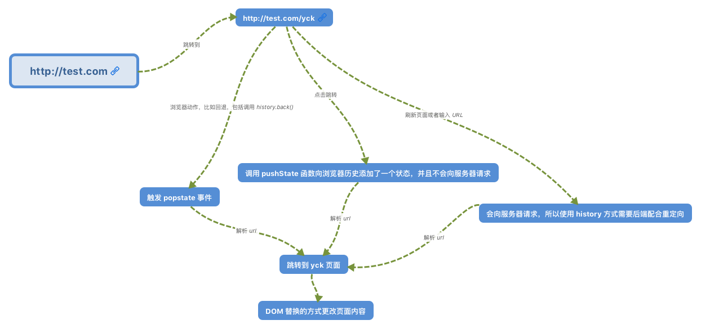

# vue-router 学习及原理
# 前言
本人平时学习及收集内容，欢迎参入一起讨论。
# 内容
# 一、什么是路由？
路由的概念起源于服务端，在以前前后端不分离的时候，由后端来控制路由，当接收到客户端发来的HTTP请求，就会根据所请求的相应URL，来找到相应的映射函数，然后执行该函数，并将函数的返回值发送给客户端。对于最简单的静态资源服务器，可以认为，所有URL的映射函数就是一个文件读取操作。对于动态资源，映射函数可能是一个数据库读取操作，也可能是进行一些数据处理等等。然后根据这些读取的数据，在服务器就使用相应的模板来对页面进行渲染后，再返回渲染完毕的页面。它的好处与缺点非常明显：
- 好处：安全性好，
SEO好； - 缺点：加大服务器的压力，不利于用户体验，代码冗合不好维护；
也正是由于后端跻身存在着自己的不足，前端跻身睹有了自己的发展空间。对于前端路由来说，路由的映射函数通常是进行一些DOM的显示和隐藏操作。这样，当访问不同的路径的时候，会显示不同的页面组件。前端跻身眩要有以下两种实现方案：
HashHistory
当然，前端路由也存在缺陷：使用浏览器的前进，后退键时会重新发送请求，来获取数据，没有合理地利用缓存。但总的来说，现在前端路由已经实现路由的主要方式了，前端三大框架Angular、React、Vue，它们的路由解决方案angular/router、react-router、vue-router都是基于前端路由进行开发的。
# 二、前端路由的两种实现
- Hash 模式
- History 模式
# 2.1 Hash 模式
早期的前端路由实现就是基于location.hash来实现的。其实原理也很简单，location.hash的值就是URL中#后面的内容，比如下面这个网站，它的location.hash的值为#search：
https://www.word.com#search
此外，hash也存在下面几个特性：
URL中hash值只是客户端的一种状态，也就是说当向服务器端发出请求时，hash部分不会被发送。hash值的改变，都会在浏览器的访问历史增加一个记录。因此我们能通过浏览器的回退、前进按钮控制hash的切换。- 我们可以使用
hashchange事件来监听hash的变化。
hash 原理图

# 2.2 History 模式
前面的hash虽然也很不错，但使用时都需要加上#，并不是很美观。因此到了HTML5，又提供了History API来实现URL的变化。其中做最主要的API有以下两个：history.pushState()和history.replaceState()。这两个API可以在不进行刷新的情况下，操作浏览器的历史纪录。唯一不同的是，前者是新增一个历史记录，后者是直接替换当前的历史记录，如下所示：
window.history.pushState(null, null, path);
window.history.replaceState(null, null, path);
2
此外，history存在下面几个特性：
pushState和replaceState的标题（title）：一般浏览器会忽略，最好传入null；- 我们可以使用
popstate事件来监听url的变化； history.pushState()或history.replaceState()不会触发popstate事件，这时我们需要手动触发页面渲染
history 原理图

# 2.3 两种路由模式的对比
| 对比点 | Hash 模式 | History 模式 |
|---|---|---|
| 美观性 | 带着#字符，较丑 | 简洁美观 |
| 兼容性 | >= ie 8，其它主流浏览器 | >= ie 10，其它主流浏览器 |
| 实用性 | 不需要对服务端做改动 | 需要服务端对路由进行相应配合设置 |
# 三、Vue-router 学习
- 基本用法
- 嵌套路由
- 参数传递
- 导航守卫
$route和$router的区别
# 3.1 基本用法
使用步骤如下：
- 下载
npm i vur-router -S - 在
main.js中引入import VueRouter from 'vue-router'; - 安装插件
Vue.use(VueRouter); - 创建路由对象并配置路由规则
let router = new VueRouter({routes:[{path:'/home',component:Home}]})； - 将其路由对象传递给 Vue 的实例，options 中加入
router:router - 在 app.vue 中留坑
<router-view></router-view>
具体代码如下：
//main.js文件中引入
import Vue from 'vue';
import VueRouter from 'vue-router';
//主体
import App from './components/app.vue';
import Home from './components/home.vue'
//安装插件
Vue.use(VueRouter); //挂载属性
//创建路由对象并配置路由规则
let router = new VueRouter({
routes: [
//一个个对象
{ path: '/home', component: Home }
]
});
//new Vue 启动
new Vue({
el: '#app',
//让vue知道我们的路由规则
router: router, //可以简写router
render: c => c(App),
})
2
3
4
5
6
7
8
9
10
11
12
13
14
15
16
17
18
19
20
21
22
最后记得在在 app.vue 中“留坑”
//app.vue中
<template>
<div>
<router-view></router-view>
</div>
</template>
<script>
export default {
data(){
return {}
}
}
</script>
2
3
4
5
6
7
8
9
10
11
12
13
# 3.2 嵌套路由
实际应用界面，通常由多层嵌套的组件组合而成。同样地，URL 中各段动态路径也按某种结构对应嵌套的各层组件，例如：
/user/foo/profile /user/foo/posts
+------------------+ +-----------------+
| User | | User |
| +--------------+ | | +-------------+ |
| | Profile | | +------------> | | Posts | |
| | | | | | | |
| +--------------+ | | +-------------+ |
+------------------+ +-----------------+
2
3
4
5
6
7
8
创建 app:
<div id="app">
<router-view></router-view>
</div>
2
3
User组件的模板添加一个<router-view>：
const User = {
template: `
<div class="user">
<h2>User {{ $route.params.id }}</h2>
<router-view></router-view>
</div>
`
}
2
3
4
5
6
7
8
需要在 VueRouter 的参数中使用children配置：
const router = new VueRouter({
routes: [
{ path: '/user/:id', component: User,
children: [
{
// 当 /user/:id/profile 匹配成功，
// UserProfile 会被渲染在 User 的 <router-view> 中
path: 'profile',
component: UserProfile
},
{
// 当 /user/:id/posts 匹配成功
// UserPosts 会被渲染在 User 的 <router-view> 中
path: 'posts',
component: UserPosts
}
]
}
]
})
2
3
4
5
6
7
8
9
10
11
12
13
14
15
16
17
18
19
20
# 3.3 参数传递
- 用 name 传递参数
routes:[
{
path:'/',
name:'Hello',
component:Hello
}
]
2
3
4
5
6
7
模板里(src/App.vue)用$route.name来接收比如：<p>v-8d780dc8</p>
- 通过
<router-link>标签中的 to 传参
基本语法：
<router-link :to="{name:xxx,params:{key:value}}">valueString</router-link>
接收参数：
{{$route.params.key}}
- 利用 url 传递参数——在配置文件里以冒号的形式设置参数
基本示例：
{
path:'/params/:newsId/:newsTitle',
component:Params
}
2
3
4
接收参数：
<template>
<div>
<h2>{{ msg }}</h2>
<p>新闻ID：{{ $route.params.newsId}}</p>
<p>新闻标题：{{ $route.params.newsTitle}}</p>
</div>
</template>
<script>
export default {
name: 'params',
data () {
return {
msg: 'params page'
}
}
}
</script>
2
3
4
5
6
7
8
9
10
11
12
13
14
15
16
17
# 3.4 导航守卫
导航守卫函数，主要是在导航中转的时候做一些操作，比如跳转页面之前，进行判断，比如跳转的时候，判断是否某个字段是否为 true，如果为 true，则跳转到 A 组件内，否则的话跳到 B 组件内。而钩子函数根据其生效范围可以分为全局钩子函数，路由独享钩子函数和组件内钩子函数。
全局钩子函数
router.beforeEach((to, from, next)=>{
//do something
next();
});
router.afterEach((to, from, next) => {
console.log(to.path);
});
2
3
4
5
6
7
上面的钩子方法接收三个采纳数：
to：即将要进入的目标路由对象。from：当前导航正要离开的路由。next：一定要调用该方法来 resolve 这个钩子。next()：进行管道的下一个钩子。next(false)：中断当前导航。next('/')：跳转到一个不同的地址，当前的导航被中断，然后进行一个新的导航。
路由独享钩子函数
对单个的路由使用 beforeEnter 函数，我们在 router/index 的文件里面可以如下编写代码：
const router = new Router({
mode: 'history', // 访问路径不带井号
base: '/page/app', // 配置单页应用的基路径
routes: [
{
path: '/',
name: 'HelloWorld',
component: resolve => require(['@/views/HelloWorld'], resolve) // 使用懒加载
},
{
path: '/helloworld',
name: 'HelloWorld',
component: resolve => require(['@/views/HelloWorld'], resolve), // 使用懒加载
beforeEnter(to, from, next) {
console.log(111)
console.log(to.path); // 打印 /helloworld
console.log(from.path); // 打印 /
next(); // 跳到/helloworld 组件页面
}
},
{
path: '/demo',
name: 'demo',
component: resolve => require(['@/views/demo'], resolve) // 使用懒加载
}
]
});
export default router;
2
3
4
5
6
7
8
9
10
11
12
13
14
15
16
17
18
19
20
21
22
23
24
25
26
27
28
组件内钩子函数
更细粒度的路由拦截，只针对一个进入某一个组件的拦截。
export default {
name: 'HelloWorld2',
data () {
return {
msg: 'Welcome to Your Vue.js App'
};
},
created () {
this.getInfo();
},
beforeRouteEnter(to, from, next) {
// 在渲染该组件的对应路由被 confirm 前调用
// 不！能！获取组件实例 `this`
// 因为当钩子执行前，组件实例还没被创建
console.log(to.path); // 打印 /helloworld
console.log(from.path); // 打印 /
next(); // 跳转到 /helloworld 指定的页面
},
beforeRouteUpdate (to, from, next) {
// 在当前路由改变，但是该组件被复用时调用
// 举例来说，对于一个带有动态参数的路径 /foo/:id，在 /foo/1 和 /foo/2 之间跳转的时候，
// 由于会渲染同样的 Foo 组件，因此组件实例会被复用。而这个钩子就会在这个情况下被调用。
// 可以访问组件实例 `this`
},
beforeRouteLeave (to, from, next) {
// 导航离开该组件的对应路由时调用
// 可以访问组件实例 `this`
}
};
2
3
4
5
6
7
8
9
10
11
12
13
14
15
16
17
18
19
20
21
22
23
24
25
26
27
28
29
钩子函数使用场景:路由钩子函数在项目开发中用的并不是非常多，一般用于登录态的校验，没有登录跳转到登录页；权限的校验等等。
# 3.5 $route 和 $router 的区别
$route 是“路由信息对象”，包括 path，params，hash，query，fullPath，matched，name 等路由信息参数。
$router是“路由实例”，即使用 new VueRouter 创建的实例，包括了路由的跳转方法，钩子函数等。$router常见跳转方法：$router.push和$router.replace
# 四、总结
- 学习了前端路由两种实现分别为
history和hash history模式，需要跟服务端进行配合而且有浏览器兼容性问题，地址栏美观。当用户手动刷新页面时，会请求服务器；当用户点某个地址时，会使用pushstate或replacestate两个方法，但这两个方法不触发事件popstate，当用户点击返回或前进按钮时，会触发事件popstatehash模式，主要是通过使用hashchange事件来监听 hash 的变化。当用户手动刷新页面时，不会向服务器发送请求，也不会触发hashchange事件；当用户点击跳转地址或浏览器前进返回按钮时，会触发hashchange事件。vue-router的基本使用，路由守卫，路由嵌套、参数传递
# 参考资料
- 从头开始学习 vue-router
- vue-router 实现单页面路由原理
- 「vue 基础」Vue Router 使用指南下篇
- 深度剖析：前端路由原理
- 前端开发需要了解的「路由跳转原理」
- 「前端进阶」彻底弄懂前端路由
- 【第 1611 期】前端路由原理解析和实现
# 联系作者
平凡世界，贵在坚持。